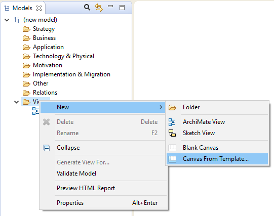
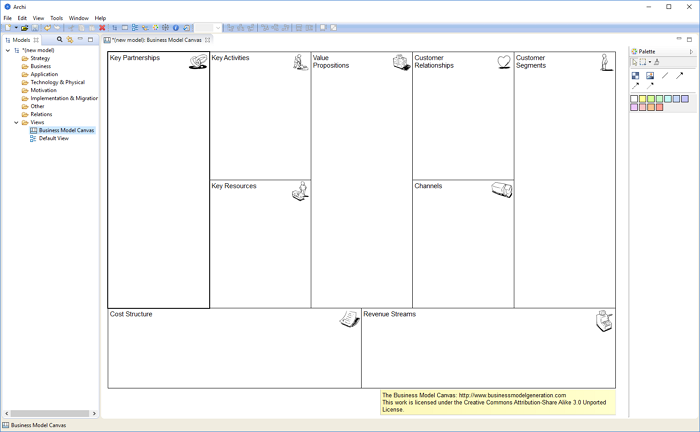
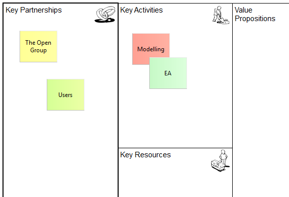

Le moyen le plus rapide de démarrer avec l'outillage de modélisation du canevas consiste à créer un nouveau canevas en partant d'un modèle existant. Nous allons créer un nouveau canevas de modèle métier.
Le canevas se compose de 9 blocs vides. Chaque bloc se comporte comme un conteneur qui peut contenir des "Magnets" ainsi que d'autres éléments qui sont ajoutés depuis la palette. Chaque bloc est actuellement verrouillé de telle sorte que nous ne pouvez pas le déplacer ou le redimensionner. En effet, les blocs se comportent comme des conteneurs en toile de fond. Chaque bloc possède également une "astuce" au format texte qui est affichée dans la fenêtre des astuces.
Ajoutez des "Magnets" depuis la palette puis modifiez le texte dans le Magnet pour créer votre modèle de canevas:
Ajout de "Magnets" au canevas
Le canevas de modèle métier est soumis à la licence Creative Commons Attribution-Share Alike 3.0 Unported License